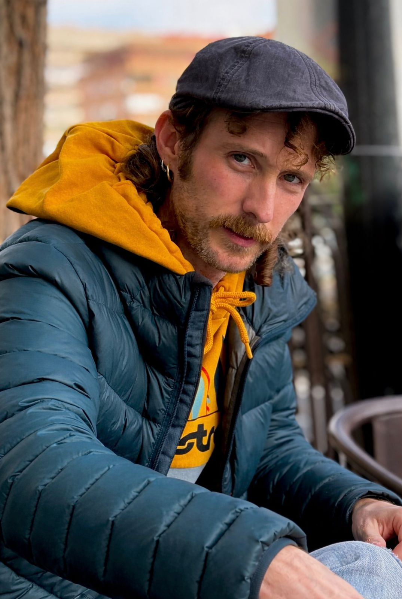

ABOUT ME//
"Soy Pau Montalvá, un creador visual multidisciplinar. Mi trayectoria comenzó con la Fotografía Artística en la EASD Valencia, donde aprendí a educar la mirada, formación que complementé posteriormente con el grado en Diseño Gráfico. Actualmente, curso el Máster en Programación Web y Diseño UX/UI, cerrando el círculo entre la estética, la funcionalidad y la técnica. Mi visión combina la sensibilidad del mundo analógico con la precisión del desarrollo moderno, creando experiencias digitales donde el diseño y la narrativa visual se unen de forma coherente. Puedes explorar mi universo visual y mis proyectos anteriores en mi perfil de Behance."
"I'm Pau Montalvá, a multidisciplinary visual creator. My journey began with Artistic Photography at EASD Valencia, where I learned to train my eye, a skill I later complemented with a degree in Graphic Design. Currently, I'm pursuing a Master's in Web Programming and UX/UI Design, completing the circle between aesthetics, functionality, and technique. My vision combines the sensitivity of the analog world with the precision of modern development, creating digital experiences where design and visual storytelling come together seamlessly. You can explore my visual universe and previous projects on my Behance profile."
"Soc Pau Montalvá, un creador visual multidisciplinari. La meua trajectòria va començar amb la Fotografia Artística en la EASD València, on vaig aprendre a educar la mirada, formació que vaig complementar posteriorment amb el grau en Disseny Gràfic. Actualment, curse el Màster en Programació Web i Disseny UX/UI, tancant el cercle entre l'estètica, la funcionalitat i la tècnica. La meua visió combina la sensibilitat del món analògic amb la precisió del desenvolupament modern, creant experiències digitals on el disseny i la narrativa visual s'uneixen de manera coherent. Pots explorar el meu univers visual i els meus projectes anteriors en el meu perfil de Behance."
